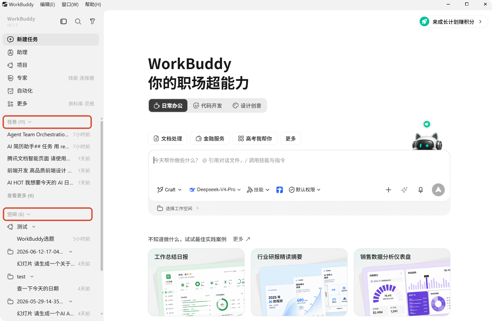
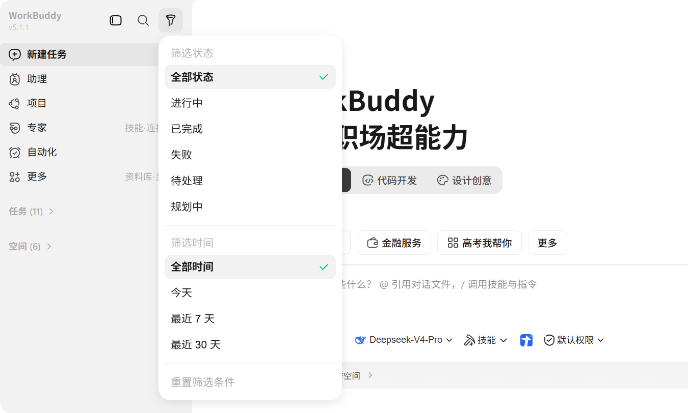
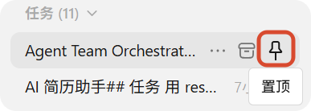
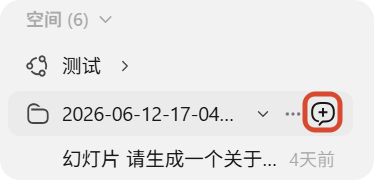

任务管理
任务列表
左侧边栏会显示您创建过的任务，方便您随时回看、继续处理和切换上下文。
当前列表分为两个板块：
- 任务：展示最近访问或最近更新的任务
- 空间：按工作空间整理的任务，方便您在同一个项目下集中查看历史任务
每个任务卡片通常会显示：
- 任务标题
- 当前状态
- 最近更新时间或创建时间

搜索与筛选
在任务列表顶部，您可以使用搜索和筛选功能快速定位任务：
- 搜索：按任务标题快速查找任务
- 筛选：打开筛选面板，按状态或日期筛选任务
常见筛选方式包括：
- 按状态筛选：例如进行中、已完成、失败等
- 按日期筛选：缩小到某一时间范围内的任务
- 重置筛选：清空当前筛选条件，恢复查看全部任务

任务状态
任务会随着执行过程在不同状态之间变化。当前界面中常见的状态包括：
| 状态 | 说明 |
|---|---|
| 进行中 | WorkBuddy 正在执行任务 |
| 已完成 | 任务已经执行完成 |
| 失败 | 执行过程中出现问题，任务未能完成 |
| 待处理 | 任务等待进一步处理或输入 |
| 规划中 | WorkBuddy 正在分析需求并整理执行思路 |
| 已归档 | 任务已被归档，用于后续查阅 |
常见管理操作
任务列表
在任务列表中，您可以进行以下操作：
- 点击任务卡片，进入该任务的对话和结果页面
- 通过搜索或筛选，快速找到特定任务
- 在已有任务基础上继续发送消息，让 WorkBuddy 接着之前的上下文继续处理
- 对不再需要的任务执行清理操作
任务
对每条任务可以进行以下操作：
| 操作 | 说明 | 图示指引 |
|---|---|---|
| 置顶 | 将任务置于列表顶端 |  |
| 打开文件夹 | 打开任务所在文件夹 | - |
| 重命名 | 修改任务名 | - |
| 保存到工作空间 |
| - |
| 分享任务 | 分享到任意渠道后，自动生成公开链接 |  |
| 删除 | 从列表中删除任务，不展示任务 | - |
| 归档 | 任务归档后可在「系统设置-数据管理」中查看已归档任务 |  |
工作空间
对工作空间可以进行以下操作：
| 操作 | 说明 | 图示指引 |
|---|---|---|
| 新建任务 | 在同一个工作空间中开启新任务 |  |
| 打开文件夹 | 打开工作空间所在文件夹 | - |
| 从列表中移除 | 从列表中移除工作空间，不展示工作空间 | - |
继续处理已有任务
对于已经完成、失败，或暂时中断的任务，您都可以重新进入任务继续补充消息。这样可以在已有上下文基础上继续推进，而不必重新从头创建。
适合继续处理的场景包括：
- 任务第一次结果还不够完整，想继续细化
- 任务执行失败后，需要补充信息再试一次
- 您想基于之前的结果继续扩展新的需求